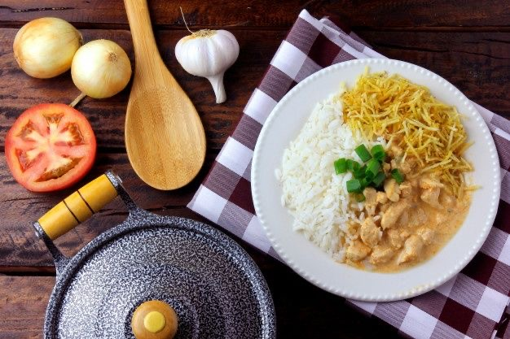

𝕊𝕥𝕣𝕠𝕘𝕠𝕟𝕠𝕗𝕗 𝕕𝕖 𝕗𝕣𝕒𝕟𝕘𝕠

Descrição:
Estrogonofe (do russo строганов, stroganov) é um prato originário da culinária russa composto de cubos de carne bovina servidos num molho de creme de leite. Desde suas origens no século XIX, o prato popularizou-se em muitos países europeus, norte-americanos e no Brasil, sempre com variações consideráveis da receita original.
Fonte: wikipedia
Como fazer?
Ingredientes:
- 3 colheres (sopa) de manteiga
- 1 kg de filé de frango
- 2 cebolas picadas
- 3 dentes de alho
- meia colher (sopa) de sal
- 1 pitada de pimenta-do-reino moída
- 1 xícara de água
- 3 colheres (sopa) de purê de tomate
- 1 colher (sopa) de mostarda
- 2 colheres (sopa) de ketchup
- 1 lata de NESTLÉ© Creme de Leite
Para acompanhar e servir o prato:
- Arroz Branco
- Batata Palha
Modo de preparo
- Reúna todos os ingredientes
- Corte o frango em cubinhos
- Leve uma panela ao fogo médio e refogue a cebola e o alhona manteiga até que ela fique douradinha. Na sequência, acrescente o frango cortado em cubinhos, o sal, a pimenta, misture e espere dourar
- Coloque a água e deixe ferver
- Quando boa parte da água evaporar, deixe o frango fritar um pouco
- Quando o frango já tiver dourado, acrescente o molho de tomate logo em seguida adicione o creme de leite, o ketchup, mexa mais uma vez até misturar e deixe levantar fervura.
- Se necessário, corrija o sal e a pimenta. Desligue o fogo e sirva em seguida.
Dica:
Sirva com arroz branco e batata palha.